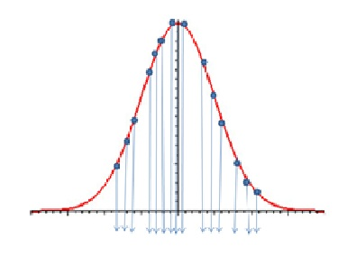
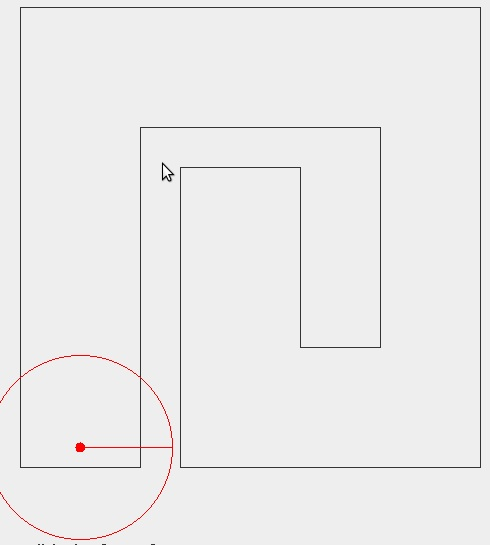
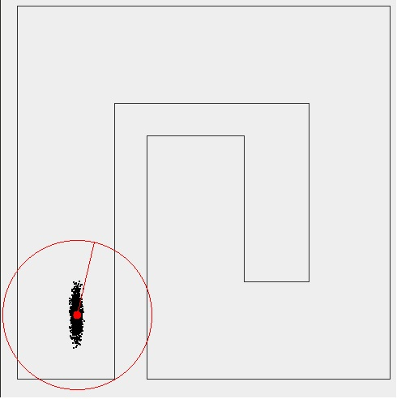
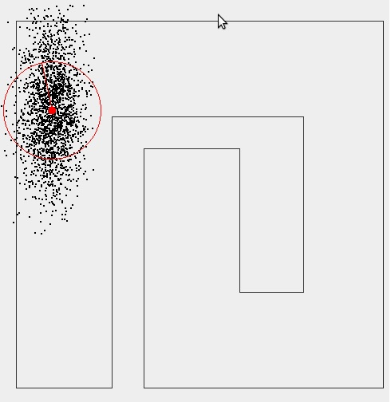
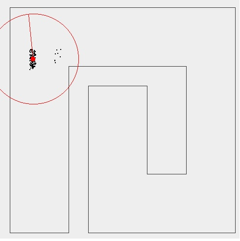

What is Localization?
Localization is the problem of estimating a robot's pose (it’s location on a map, and its heading).
A robot cannot sense its own pose directly so it tries to position itself relative to a map, using sensor readings.
A probability distribution function is used to model the uncertainty of the robots pose.
Why use Probabilistic Methods?
Suppose, that a robot is in a particular position. Also suppose, the localization method used tells us that it is in an altogether different location entirely (this is not such an outlandish claim as there is no deterministic algorithm to determine where the robot actually is. Localization is as such still an unsolved problem). Then, working with the false position of the robot to navigate it can lead to collision having potentially disasterous implications.
Using a probabilistic method we never explicitly state that the robot is in a particular location. We only state that the likelihood of it being in a particular location is high. This does not rule out the possibility of it being in another location. Thus with more sensor updates we gain more information about the environment allowing us to strengthen or weaken the surety of our belief (as to where the robot is). Basically, by not commiting to any specific location we have more robust methods at our disposal to localize a robot.
Also, the results obtained by probabilistic methods have been better than the ones obtained by deterministic methods. Leading, to a preference of the former over the latter in modern robotics research.
The higher the value of the pdf at a particular pose in the distribution the larger the likelier it is that the robot is present there. The process of Localization involves estimating the posterior belief of the robot based on some sensory information.
EKF Localization uses a Gaussian Filter to estimate the robots pose.
In case of Gaussian filters like the Kalman and the EKF filter the belief is represented by a Gaussian probability density function. Since Gaussians are unimodal and possess a single maxima, they are useful in modeling localization problems where the initial position for the robot is known. The mean is the most-likely position of the robot and the area around it represents the measure of uncertainty.
But in cases where a Gaussian is not a good representation of the belief (like the Global Localization Problem), we have to turn to other methods.
Enter the particle filter.
Why particle filters?
Particle filters are used to approximate the posterior belief by a set of samples. Instead of representing the belief as an explicit function, the belief distribution is represented by a set of samples.
Thus the particle filter can be used to model distributions of any type.
With each particle is associated a weight. The weight of a particle is an indicator of its quality. The weighted sum of the particles gives an estimate of the variable of interest.
Monte Carlo Localization
Monte Carlo Localization is the application of the particle filter algorithm to estimate a robot’s pose. The particles in this case, are an estimate of the pose of the robot. And the weights are a measure of the likelihood of this estimate being the true robot pose.
Expected state of the robot is the expected value obtained from particles as X=Σxipi . Here p(xi) = pi is the probability that the particle is in the state xi.
Each particle represents a state xi and has associated with it the probability pi that it belongs to that state.
The state of the particle is updated every time the robot moves or senses.
The philosophy is that initially the particles are spread everywhere and with sensor updates and motion they converge to the actual position of the robot.

Robot motion is inherently noisy. If a robot is given a command to reach a particular goal it will probably fall short or overshoot. This can be due to various reasons like the slipping of the wheels or noise in the motor circuitry. So it makes sense to model this ambiguity in a robot’s motion by using a motion model.
The Motion Model:
The noise in the robot’s motion is modeled by a Gaussian pdf . The robot is more likely to be around the desired location than any other location. The likelihood of finding the robot decreases as we move away from the desired position. Thus, intuitively it makes sense to model the velocity model noise using a Gaussian, with the maxima of the Gaussian centered at the desired location.
The Algorithm
1. Θ(new)=Θ(old)+ωxΔt+N(0,σ(Θ))
The robot first rotates to the desired heading. Some zero-mean Gaussian noise with a standard deviation of σ(Θ) is thrown in.
2. R(new)=R(old)+v x Δt + N(0,σ(r))
Then the robot moves in the direction of the new heading. A noise of N(0,σ(r)) is added to the robot.
3. X=R x cos(Θ(new))
4. Y=R x sin(Θ(new))
In the model we assume the noise due to (r) and the noise due to (Θ) are completely independent of each other. Thus the correlation between (r) and (Θ) is zero and the covariance matrix is diagonal with σ(r) and σ(Θ).
The covariance matrix in x and y can be obtained by transforming the covariance matrix in (r) and (Θ) via a Jacobian transform.
5. Ε(x,y)=J x Ε(r,Θ) x J'
J denotes the Jacobian. J' its transpose.
Ε the covariance matrix
6. The final orientation is sampled from a bivariate normal distribution with N((X,Y),Ε(x,y)).
The Sensor Model:
The sensor model used in the simulation adds to each reading a zero mean Gaussian noise with a variance which can be selected. Thus the result is that the robot receives a value that is centered around its exact reading but deviates as a Gaussian does.
The Particle Filter:
The particle filter has been used for decades to approximate a posterior belief (a pdf) by a set of samples.
The samples are called particles.
Each particle is a set of 2 elements. One is an estimate of the variable of interest (in our case the robot’s pose). The other is the weight of the particle, which is an indicator of its quality. As the particle filter is non-parametric (does not depend on an explicit function) it can be used to model pdf’s of all types.
The larger the number of particles used the more accurate a representation it would be of the pdf. A Particle Filter with infinite particles amounts to the continuous probability function.

The Gaussian in the figure is represented by a set of samples/particles (the arrows). You can see as the number of particles tends to infinity the entire Gaussian is represented.
Monte Carlo Localization:
Monte Carlo Localization applies the particle filter algorithm to solve the problem of the robot’s pose estimation.
Monte Carlo Localization Algorithm:
1. Initialization: We start off with an initial estimate of where the robot is. If the problem is Local then all the particles are initialized to that of the robot. If the problem is Global then the particles are spread all over the map. The weights of the particles initially are equal.
2. We then move the robot so that it is in a position to gain new information.
In this step all the particles sample from a noisy velocity model
3. We gain the new information by sensing.
4. We look at all the particles and assign a weight to each of them based on how well the data they collected fits the data of the robot.
The particles with readings similar to that of the robot are assigned higher weights than the other particles.
5. We resample particles from the higher weights discarding the particles with readings that deviate significantly from that of the robot.
6. We goto step 2
Resampling
The objective of resampling is to eliminate the particles that do not fit the robot’s data as they have a poor estimate of where the robot is.
Resampling can be done in various ways. The method used in the applet is one where the particles are drawn proportional to their weight p(xi)=pi.
Suppose we have 500 particles and we choose to resample them. The particles with a higher weight get sampled from more often than a particle with a lower weight.
The Resampling Algorithm
The resampling for the jth particle is done as follows:
- Generate a random number r in [0,1].
- Find by binary subdivision the smallest i for which ci>=r.
- Set the jth particle as the particle with state corresponding to the smallest i found from above
Here each ci represents the cumulative probability of ith particle i.e.
c0 = 0 ; ci = ci-1 + pi
An Illustration:

Initially the pose of the robot is known .There is no ambiguity as to where the robot is. All the particles are also in the same location as the robot. (In the figure they are under the robot and thus not visible.)

As we move the particles sample from a noisy motion model and start spreading. Thus the pose of the robot becomes more ambiguous.

The more we move without sensing the more the spread, because the initial belief we input into the motion model is itself incorrect.

On sensing, a set of readings is obtained, and resampling is done eliminating the particles that have readings that deviate from those of the robot. These particles are usually the ones that are nowhere near the robot.

The objective of this virtual lab is to simulate how a robot can localize itself using Monte-Carlo Localization. The noise in the velocity model is Gaussian. Monte Carlo Localization uses a sample-based representation (the particle filter) to approximate this Gaussian and estimate the pose of the robot.

Information to use the Experiment:
- Choose whether you want to solve a Global Localization Problem or a Local one.
- Select the standard deviations in the velocity models (sigmaR and sigmaTheta). F
- Select the sensor range (from the slider) and standard deviation for the sensor noise.
- Select a map.
- Click on the map to move your robot there. (See the particles spread).
- Click Sense so that the robot carries out a sensory update and resamples from the particles. (The spread of the particles decreases).
The range sensor returns the maximum range meausurable if no obstructions are detected, giving no additional information. Therefore moving closer to the wall, or increasing the sensor range yields more fruitful information giving a stronger set of samples.


1. What alternative resampling strategies can be used?
2. If we increase the number of sensors what changes would we notice when we press the sense button?
3. For a robot moving down a long symmetric corridor it is possible that a particle with a heading exactly opposite to that of the robot gets the same reading as the robot. What can we do then?
4.What happens if there are no obstacles within sensing range?
5. If the spread of the particles is mainly in the direction of the heading of the robot, what can you infer about the velocity model?
6. If the spread of the particles is mainly in the direction perpendicular to that of the robot, what can you infer about the velocity model?
7.Will the function work when the sensor noise is far greater than the motion noise?

Books
- Probabilistic Robotics by Thrun Burgard Fox.
Papers
- Dellaert, F. ,Fox, D., Burgard, W., Thrun, S., Monte Carlo Localization for Mobile Robots ICRAI99